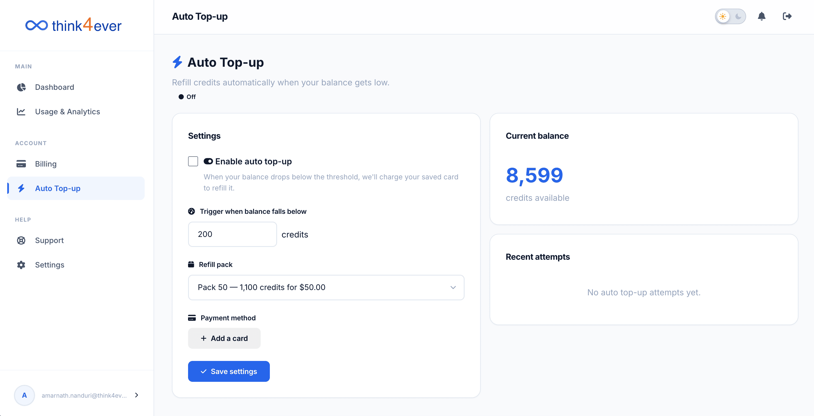

Auto-Top Up
The Auto Top-up settings page lets you automate credit purchases to prevent processing interruptions. When your credit balance drops below a set floor, the system automatically bills your linked payment method to replenish your account.

Status Indicator
- Located directly under the section title, a green Active badge indicates that the automation rules are currently live and monitoring your account balance in real time.
Configuration Settings Panel
This section houses the control parameters for managing your automated replenishment rules:
- Enable auto top-up Checkbox: Toggles the automatic replenishment feature on or off.
- Trigger when balance falls below: A customizable input field where you define your minimum safety threshold (e.g., 500 credits). If your active balance dips below this number, a refill is automatically initiated.
-
Refill pack:
Displays the active card on file allocated specifically for
automated charges (e.g., AMEX •••• 2006).
- Click the Change button to select or link a different card.
- Save settings Button: Saves any modifications made to your trigger thresholds or refill packs.
- Turn off Button Instantly disables the automatic billing automation.
Current Balance Snapshot
- Displays your immediate credits available balance (e.g., 8,116) alongside a reminder of your active trigger threshold limit (500 credits), making it easy to see how close you are to an automated refill.
Recent Attempts Log
An audit trail displaying a history of your latest automated transaction events:
| When | Status | Amount / Credits |
|---|---|---|
| 5/13/2026, 3:39:17 PM | success | $50.00 for +1,100 credits |
| Completion tokens | 1.2M | Represents the actual output generated by your AI agents (e.g., code, generated text, or processed system steps). |
| 5/13/2026, 7:02:20 AM | success | $50.00 for +1,100 credits |
(Note: The log monitors execution attempts and explicitly notes whether a purchase succeeded or encountered an issue, such as an expired card).